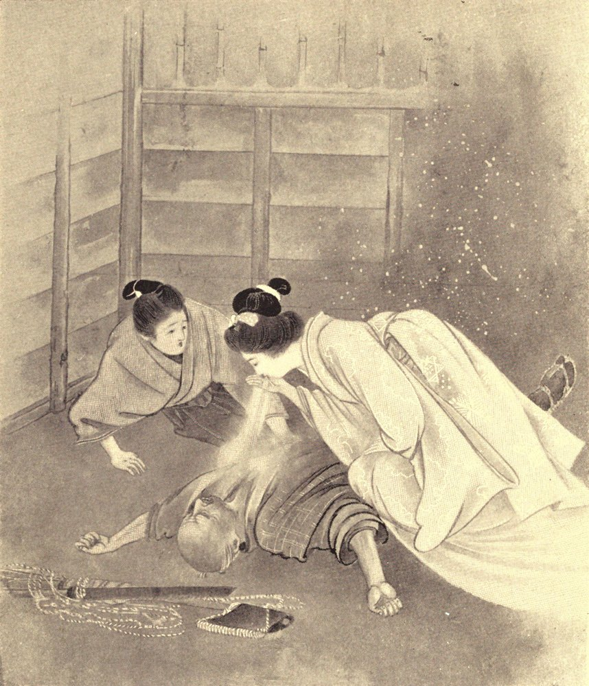

Chapter 11: Yuki-onna¶
11.1 Yuki-onna¶
In a village of Musashi Province (1), there lived two woodcutters: Mosaku and Minokichi. At the time of which I am speaking, Mosaku was an old man; and Minokichi, his apprentice, was a lad of eighteen years. Every day they went together to a forest situated about five miles from their village. On the way to that forest there is a wide river to cross; and there is a ferry-boat. Several times a bridge was built where the ferry is; but the bridge was each time carried away by a flood. No common bridge can resist the current there when the river rises.
Mosaku and Minokichi were on their way home, one very cold evening, when a great snowstorm overtook them. They reached the ferry; and they found that the boatman had gone away, leaving his boat on the other side of the river. It was no day for swimming; and the woodcutters took shelter in the ferryman’s hut,—thinking themselves lucky to find any shelter at all. There was no brazier in the hut, nor any place in which to make a fire: it was only a two-mat1 hut, with a single door, but no window. Mosaku and Minokichi fastened the door, and lay down to rest, with their straw rain-coats over them. At first they did not feel very cold; and they thought that the storm would soon be over.
The old man almost immediately fell asleep; but the boy, Minokichi, lay awake a long time, listening to the awful wind, and the continual slashing of the snow against the door. The river was roaring; and the hut swayed and creaked like a junk at sea. It was a terrible storm; and the air was every moment becoming colder; and Minokichi shivered under his rain-coat. But at last, in spite of the cold, he too fell asleep.
He was awakened by a showering of snow in his face. The door of the hut had been forced open; and, by the snow-light (yuki-akari), he saw a woman in the room,—a woman all in white. She was bending above Mosaku, and blowing her breath upon him;—and her breath was like a bright white smoke. Almost in the same moment she turned to Minokichi, and stooped over him. He tried to cry out, but found that he could not utter any sound. The white woman bent down over him, lower and lower, until her face almost touched him; and he saw that she was very beautiful,—though her eyes made him afraid. For a little time she continued to look at him;—then she smiled, and she whispered:—“I intended to treat you like the other man. But I cannot help feeling some pity for you,—because you are so young... You are a pretty boy, Minokichi; and I will not hurt you now. But, if you ever tell anybody—even your own mother—about what you have seen this night, I shall know it; and then I will kill you... Remember what I say!”

With these words, she turned from him, and passed through the doorway. Then he found himself able to move; and he sprang up, and looked out. But the woman was nowhere to be seen; and the snow was driving furiously into the hut. Minokichi closed the door, and secured it by fixing several billets of wood against it. He wondered if the wind had blown it open;—he thought that he might have been only dreaming, and might have mistaken the gleam of the snow-light in the doorway for the figure of a white woman: but he could not be sure. He called to Mosaku, and was frightened because the old man did not answer. He put out his hand in the dark, and touched Mosaku’s face, and found that it was ice! Mosaku was stark and dead...
By dawn the storm was over; and when the ferryman returned to his station, a little after sunrise, he found Minokichi lying senseless beside the frozen body of Mosaku. Minokichi was promptly cared for, and soon came to himself; but he remained a long time ill from the effects of the cold of that terrible night. He had been greatly frightened also by the old man’s death; but he said nothing about the vision of the woman in white. As soon as he got well again, he returned to his calling,—going alone every morning to the forest, and coming back at nightfall with his bundles of wood, which his mother helped him to sell.
One evening, in the winter of the following year, as he was on his way home, he overtook a girl who happened to be traveling by the same road. She was a tall, slim girl, very good-looking; and she answered Minokichi’s greeting in a voice as pleasant to the ear as the voice of a song-bird. Then he walked beside her; and they began to talk. The girl said that her name was O-Yuki;2 that she had lately lost both of her parents; and that she was going to Yedo (2), where she happened to have some poor relations, who might help her to find a situation as a servant. Minokichi soon felt charmed by this strange girl; and the more that he looked at her, the handsomer she appeared to be. He asked her whether she was yet betrothed; and she answered, laughingly, that she was free. Then, in her turn, she asked Minokichi whether he was married, or pledged to marry; and he told her that, although he had only a widowed mother to support, the question of an “honorable daughter-in-law” had not yet been considered, as he was very young... After these confidences, they walked on for a long while without speaking; but, as the proverb declares, Ki ga aréba, mé mo kuchi hodo ni mono wo iu: “When the wish is there, the eyes can say as much as the mouth.” By the time they reached the village, they had become very much pleased with each other; and then Minokichi asked O-Yuki to rest awhile at his house. After some shy hesitation, she went there with him; and his mother made her welcome, and prepared a warm meal for her. O-Yuki behaved so nicely that Minokichi’s mother took a sudden fancy to her, and persuaded her to delay her journey to Yedo. And the natural end of the matter was that Yuki never went to Yedo at all. She remained in the house, as an “honorable daughter-in-law.”
O-Yuki proved a very good daughter-in-law. When Minokichi’s mother came to die,—some five years later,—her last words were words of affection and praise for the wife of her son. And O-Yuki bore Minokichi ten children, boys and girls,—handsome children all of them, and very fair of skin.
The country-folk thought O-Yuki a wonderful person, by nature different from themselves. Most of the peasant-women age early; but O-Yuki, even after having become the mother of ten children, looked as young and fresh as on the day when she had first come to the village.
One night, after the children had gone to sleep, O-Yuki was sewing by the light of a paper lamp; and Minokichi, watching her, said:—
“To see you sewing there, with the light on your face, makes me think of a strange thing that happened when I was a lad of eighteen. I then saw somebody as beautiful and white as you are now—indeed, she was very like you.”...
Without lifting her eyes from her work, O-Yuki responded:—
“Tell me about her... Where did you see her?”
Then Minokichi told her about the terrible night in the ferryman’s hut,—and about the White Woman that had stooped above him, smiling and whispering,—and about the silent death of old Mosaku. And he said:—
“Asleep or awake, that was the only time that I saw a being as beautiful as you. Of course, she was not a human being; and I was afraid of her,—very much afraid,—but she was so white!... Indeed, I have never been sure whether it was a dream that I saw, or the Woman of the Snow.”...
O-Yuki flung down her sewing, and arose, and bowed above Minokichi where he sat, and shrieked into his face:—
“It was I—I—I! Yuki it was! And I told you then that I would kill you if you ever said one word about it!... But for those children asleep there, I would kill you this moment! And now you had better take very, very good care of them; for if ever they have reason to complain of you, I will treat you as you deserve!”...
Even as she screamed, her voice became thin, like a crying of wind;—then she melted into a bright white mist that spired to the roof-beams, and shuddered away through the smoke-hole.... Never again was she seen.